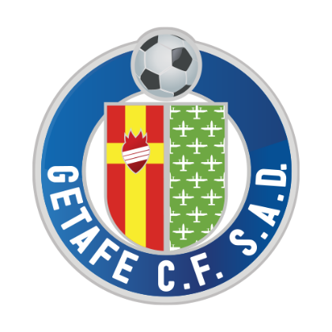

Official Website For Foot Goal

Official Website For Foot Goal
Leyenda del Getafe CF




Manuel del Moral Fernández, conocido como Manu del Moral, nació en Jaén el 25 de febrero de 1984 y fue uno de los delanteros que consolidaron al Getafe en Primera División. Llegó en 2006 desde el Atlético de Madrid y durante cinco temporadas participó en las dos finales de Copa y en el estreno europeo azulón. Su movilidad, capacidad para atacar los espacios y aportación goleadora lo convirtieron en una referencia de aquella etapa de crecimiento del club.
Firmó 37 goles en Primera División con el Getafe durante cinco temporadas.
Formado en las categorías inferiores del Real Jaén, continuó su desarrollo en el Atlético de Madrid y pasó cedido por el Recreativo de Huelva antes de estrenarse en Primera con el conjunto rojiblanco. El Getafe le ofreció continuidad y responsabilidad ofensiva. En el Coliseum compartió una época que llevó a un club joven a competir con grandes rivales nacionales y europeos. Sumó 195 partidos con la camiseta azulona y 37 goles de Liga en la máxima categoría, registros que explican el recuerdo que conserva la afición.
En 2011 dio el salto al Sevilla y debutó con la selección española absoluta en la victoria ante Venezuela, entrando por David Villa. Su trayectoria posterior incluyó Elche, Eibar, Valladolid y Numancia, con el que disputó la final de la promoción a Primera de 2018 y marcó en Zorrilla. Después trasladó su experiencia al banquillo. Tras dirigir a equipos de Motril, regresó al Getafe en 2025 como entrenador del filial, un nuevo vínculo con la entidad en la que había firmado sus temporadas más representativas.